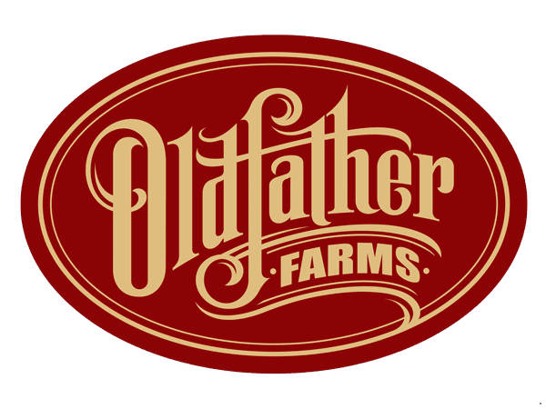
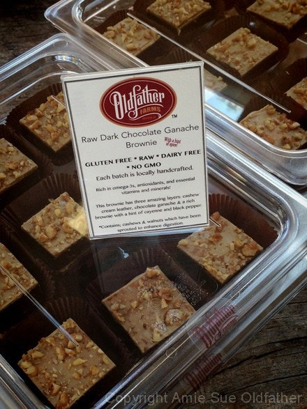

Introducing Oldfather Farms Raw Food Manufacturing Company

A lot has been going on behind the scenes of Nouveau Raw so I thought it was about time to bring you, my good readers, up to speed. For quite a while now, we have had the dream of creating our own raw food manufacturing company. Getting there has has been quite an amazing journey to say the least. We have had many distractions with our other business (Bookmans, based in Arizona), Bob and I relocating to Hood River, Oregon, buying a orchard there, let alone the day to day of life. :) But during all of this, we were taking small steps in preparation. Everything in due time, I guess.
But it is now official. Oldfather Farms™ is now a legit raw food manufacturing company! We have a licensed raw food kitchen, a logo, business cards, wholesale accounts to buy ingredients, and packaging materials. And of course recipes in place.

On October 23rd we delivered our first product, which is now being sold in one of Hood River’s finest coffee shops … Doppio Coffee and Lounge. For the past year or so, I have been taking them “raw food tastings” to get feedback on my creations. Plus, they are just so cool down there, that I love to share goodies with them, just because. So, if you live in the area or if you pass through Hood River, be sure to stop in there and order a Raw Dark Chocolate Ganache Brownie (spiced with black pepper and cayenne). They have a full menu of delicious foods and pull amazing espressos, if that is your thing. If not, they make great smoothies and even have kombucha on tap!
This is going to be exciting new chapter in our lives and I have to say that I couldn’t have done this without you and my adoring husband, Bob. You may be asking yourself, “Me?”… yes you. You have all become part of my extended family, and a wonderful support system. Just by being “here” you inspire me to continue to share my passion, and this is the next step. Don’t worry though, Nouveau Raw isn’t going anywhere! I will always be creating recipes and sharing them with you. :)
So, again Bob and I thank you for being a part of this journey, and hang on it should be quite a ride. :)
Much love,
Amie Sue
© AmieSue.com